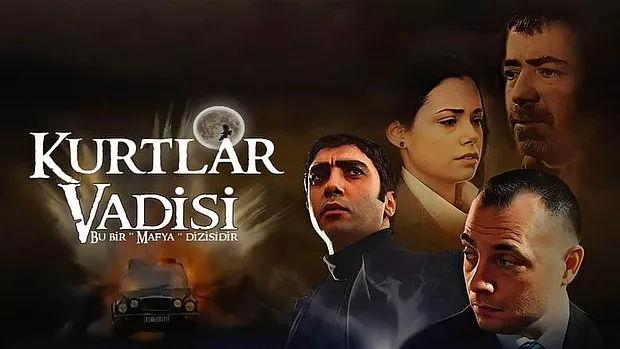
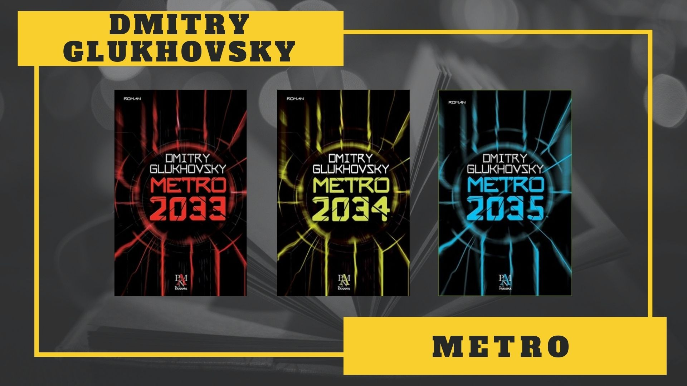

Sevdiğim Şeyler
Dark Souls

Dark Souls, FromSoftware'den Hidetaka Miyazaki tarafından yaratılan ve Bandai Namco Entertainment tarafından yayınlanan bir dizi aksiyon rol yapma oyunudur. Seri, 2011 yılında Dark Souls'un piyasaya sürülmesiyle başladı ve Dark Souls II ve Dark Souls III olmak üzere iki devam oyunu gördü.
Kurtlar Vadisi
Kurtlar Vadisi, 15 Ocak 2003 tarihinde Show TV'de "Bu bir mafya dizisidir" sloganıyla yayımlanmaya başlayan aksiyon, dram ve politik türündeki Türk televizyon dizisidir. 4 sezondan ve 97 bölümden oluşmaktadır.
Metro Kitap Serisi
Metro (Rusça: Метро), Dmitriy Gluhovskiy'nin Metro kitap serisinden uyarlanan video oyun serisidir. Serinin ilk oyunu Metro 2033, 2010 yılında 4A Games tarafından piyasaya sürüldü. Serinin devam niteliğinde ki ikinci oyunu Metro: Last Light, 2013 yılında, serinin üçüncü oyunu Metro Exodus, 2019 yılında çıkış yapmıştır.
Oyun serisi mekan olarak her ne kadar da kıyamet sonrası Moskova'yı simgelese de kitap serisi mekanı daha ayrıntılı bir şekilde tasvir ediyor.